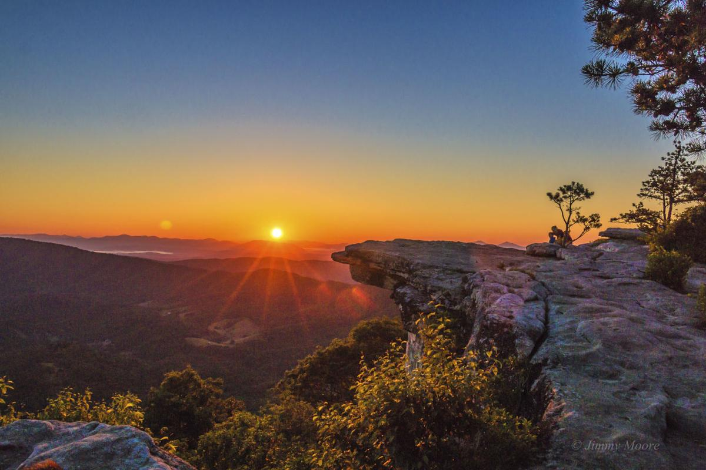

A Protected Area Is:
"A clearly defined geographical space, recognised, dedicated and managed, through legal or other effective means, to achieve the long term conservation of nature with associated ecosystem services and cultural values"1
Some Issues Affecting Protected Areas:
"Forestry issues and challenges in terms of ecosystem conservation and management has been a debatable topic over the years. Protected area such as biosphere reserves, national parks and wildlife sanctuaries are facing unpredictable pressure of global issues such as environmental degradation, biodiversity loss, climate change, and raw material supply."2 
Relative Links About Protected Areas:
- Protected Planet
- Conservation Areas:Canada
- Protected Lands
- WWF
- IUCN:Protected Areas Facing Challenges
- Spotlight on Marine Protected Areas in Canada
- Canadian Parks and Protected Areas:Climate Change(PDF)
References and Resources